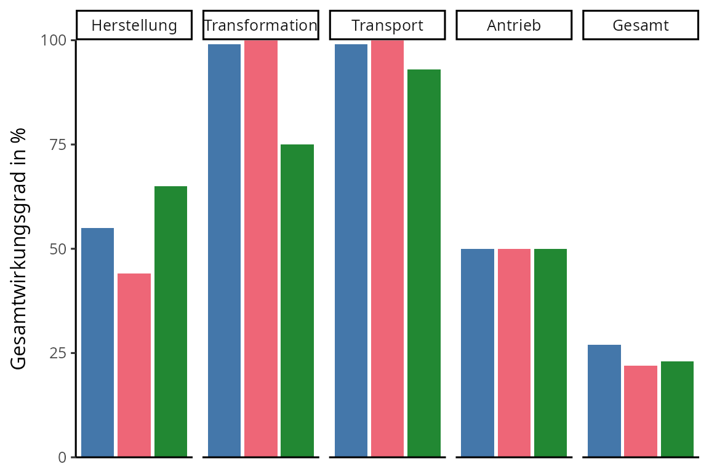

3 Energieträger
3.1 Verkehr
Die Treibhausgasemissionen des Personenverkehrs sollen drastisch reduziert werden, um die Klimaneutralität zu erreichen. Daher wird von der Politikerinnen und Politikern gefordert, dass Neuwagen mit einem Benzin- und Dieselmotor ab 2035 verboten werden. Konkret wird beraten, ob ein Umstieg auf Autos mit
- Akkumulatoren,
- Wasserstoff oder
- E-Fuels (synthetische Kraftstoffe)
als Energieträger gezielt gefördert werden soll.
Diskutiere die genannten Energieträger vor dem Hintergrund des Klimawandels. Verwende insgesamt mindestens drei Kriterien aus den Materialien.
Hinweise
- Empfiehl in deiner Einleitung eine Handlungsoption.
- Formuliere in jedem Argument eine Behauptung aufbauend auf einem Kriterium, nenne passende Fakten und erkläre, warum die Fakten deine Behauptung stützen.
- Berücksichtige in jedem Argument alle Handlungsoptionen.
- Vergleiche in deinem Schluss die Bedeutsamkeit der Kriterien für deine Entscheidung.
Kriterienübersicht
| Kriterium | Akkumulatoren | Wasserstoff | E-Fuels (synthetische Kraftstoffe) |
|---|---|---|---|
| Energiedichte | ≈ 0,88 MJ/kg | ≈ 120 MJ/kg | ≈ 46,4 MJ/kg |
| Gesamtwirkungs- grad |
64 – 70% | 25 – 28% | 15 – 20% |
| Treibhausgas- emissionen bei der Produktion |
≈ 13,1 t CO2-Äquivalente |
≈ 13,6 t CO2-Äquivalente |
≈ 7,8 t CO2-Äquivalente | |
| Verfügbarkeit | Massenfertigung | Kleinserienfertigung | Massenfertigung |
| Betrieb | Ladedauer: 30 min Reichweite: 400 km |
Tankdauer: 3 min Reichweite: 700 km |
Tankdauer: 3 min Reichweite: 700 km |
| Geräusch- emissionen |
≈ 57 dB bei 30 km/h | ≈ 57 dB bei 30 km/h | ≈ 61 dB bei 30 km/h |
Begrifflichkeiten
Alle drei Energieträger gelten als klimaneutral, sofern elektrische Energie aus erneuerbaren Energien genutzt wird.
Akkumulatoren sind wiederaufladbare elektrochemische Zellen, die aktuell auf Basis von Lithium-Verbindungen hergestellt werden. Akkumulatoren können geladen werden, indem sie an das Stromnetz angeschlossen werden. Akkumulatoren können nur in speziell konzipierten Autos mit Elektromotor genutzt werden. In diesen Autos werden Akkumulatoren fest eingebaut, um einen Elektromotor zu betreiben. Bei der chemischen Reaktion, die im Akkumulator abläuft, wird kein Stoff freigesetzt.
Wasserstoff ist ein Reinstoff, der unter Standardbedingungen als Gas vorliegt. Wasserstoff wird mittels Wasserelektrolyse hergestellt. Wasserstoff kann nur in speziell konzipierten Autos mit Brennstoffzelle und Elektromotor genutzt werden. In diesen Autos wird Wasserstoff in Drucktanks transportiert und in einer Brennstoffzelle mit Sauerstoff umgesetzt, um einen Elektromotor zu betreiben. Bei der chemischen Reaktion, die in der Brennstoffzelle abläuft, entsteht als Produkt Wasser.
E-Fuels sind Stoffgemische aus Kohlenwasserstoffen, die unter Standardbedingungen als Flüssigkeit vorliegen. E-Fuels werden aus Wasserstoff und Kohlenstoffdioxid, das der Atmosphäre entnommen wird, hergestellt. E-Fuels können in konventionellen Autos mit Verbrennungsmotor genutzt werden. In diesen Autos werden E-Fuels in Flüssigkeitstanks transportiert und in Verbrennungsmotoren mit Sauerstoff umgesetzt. Bei der Verbrennungsreaktion, die im Motorraum abläuft, entsteht als Produkt u. a. Kohlenstoffdioxid. Insgesamt wird der Atmosphäre bei der Synthese genauso viel Kohlenstoffdioxid entnommen, wie bei der Verbrennung freigesetzt wird.
Kriterium 1: Energiedichte
Die Energiedichte gibt an, wie viel Energie pro Masse eines Stoffes bzw. eines Systems gespeichert werden kann. Die Energiedichte ist der maßgebliche Faktor für die Masse eines Energiespeichers (hier Tank bzw. Akkumulator). Je höher die massenbezogene Energiedichte, desto mehr Energie kann bei gleicher Masse gespeichert werden. Der Einsatz von Energieträger mit einer höheren Energiedichte könnte somit u. a. die Konstruktion von Autos mit geringerer Masse oder größerer Reichweite ermöglichen.
Kriterium 2: Gesamtwirkungsgrad
Der Gesamtwirkungsgrad beziffert, wie effizient die elektrische Energie der erneuerbaren Energien zum Autofahren genutzt wird. In die Berechnung des Gesamtwirkungsgrads fließt der gesamte Prozess von der Bereitstellung der Energie (bspw. durch Windenergieanlagen) bis zur Nutzung beim Autofahren ein (genauer: Verhältnis aus “genutzter” Bewegungsenergie und zugeführter elektrischer Energie). Je höher der Gesamtwirkungsgrad ist, desto weniger Energie wird während des Prozesses an die Umgebung abgegeben. Je niedriger der Gesamtwirkungsgrad ist, desto mehr elektrische Energie muss bereitgestellt werden, um dieselbe Strecke zu fahren.
Bei mit Akkumulator betriebenen Autos wird die elektrische Energie direkt zum Laden des Akkumulators genutzt. Der Akkumulator wird zum Betrieb des Elektromotors genutzt.
Bei mit Wasserstoff betriebenen Autos wird die elektrische Energie genutzt, um Wasserstoff mittels Wasserelektrolyse zu erzeugen. Der Wasserstoff reagiert mit Sauerstoff in der Brennstoffzelle des Autos. Hierbei wird chemische in elektrische Energie umgewandelt, sodass der Elektromotor betrieben werden kann.
Bei mit E-Fuels betriebenen Autos wird Wasserstoff, der durch Wasserelektrolyse bereitgestellt wird, mit Kohlenstoffdioxid, das aus der Umgebungsluft gefiltert wird, zu E-Fuels umgesetzt. E-Fuels werden zum Betrieb des Verbrennungsmotors genutzt.
Kriterium 3: Treibhausgasemissionen bei der Produktion
CO2-Äquivalente ist eine Größe zur Vereinheitlichung der Klimawirkung der unterschiedlichen Treibhausgase und wird in der Einheit Tonne (t) angegeben. Die Produktion von Autos ist ein energieintensiver Prozess, bei dem Treibhausgase emittiert werden. In die Kalkulation der Treibhausgasemissionen gehen die Emission bei der Gewinnung und Aufbereitung der Rohstoffe sowie deren Weiterverarbeitung im Herstellungsprozess der Autos mit ein.
Bei mit Akkumulator betriebenen Autos entfällt ein Großteil der Treibhausgasemissionen auf die Aufbereitung von Lithium und die Herstellung des Akkumulators. Je größer der Akkumulator ist, desto mehr Treibhausgase werden emittiert. Bei Klein- und Mittelwagen entfallen mehr Treibhausgasemissionen auf die Herstellung eines mit Wasserstoff betriebenen Autos mit Brennstoffzelle als auf eines mit Akkumulator (s. Tabelle). Auf die Herstellung eines Autos der Oberklasse mit Akkumulator entfallen jedoch mehr Treibhausgasemissionen (18,6 t CO2-Äquivalent) als auf ein mit Wasserstoff betriebenes Auto mit Brennstoffzelle (13,5 t CO2-Äquivalent).
Bei mit Wasserstoff betriebenen Autos entfällt ein Großteil der Treibhausgasemissionen auf die Aufbereitung von Platin und die Herstellung der Brennstoffzelle. Der zusätzliche Akkumulator fällt hier wesentlich kleiner aus.
Bei mit E-Fuels betriebenen Autos entfällt ein Großteil der Treibhausgasemissionen auf die Aufbereitung von Platin und Palladium und die Herstellung des Verbrennungsmotors sowie des Katalysators.
Kriterium 4: Verfügbarkeit
Mit Akkumulator betriebene Autos werden bereits in Massenproduktion von fast allen Herstellern produziert und verkauft.
Mit Wasserstoff betriebene Autos werden nur von einigen wenigen Herstellern und in nur sehr begrenzter Anzahl weiterentwickelt und produziert. In Deutschland werden insgesamt nur zwei verschiedene Modelle verkauft. Viele Hersteller entwickeln derzeit keine Wasserstoffautos.
Mit E-Fuels können alle konventionellen Autos mit Verbrennungsmotor betrieben werden. Diese Autos werden im großen Maßstab von fast allen namhaften Herstellern weiterentwickelt, produziert und verkauft. Zudem könnten bereits gekaufte Autos weiterverwendet werden.
Kriterium 5: Betrieb
Wichtige Faktoren für den Betrieb eines Autos sind dessen Reichweite und die Tank- bzw. Ladedauer. Im Mittel unternehmen Personen in Deutschland drei Fahrten pro Tag mit dem Auto, wobei sie zwischen 30 und 40 Kilometer zurücklegen. Nur ca. 1 % aller Autofahrten ist länger als 100 Kilometer. Im Mittel sind Autos mehr als 23 Stunden am Tag geparkt, davon über 20 Stunden am Wohnort.
Kriterium 6: Geräuschemissionen
Autos, die mit Akkumulator und mit Wasserstoff betrieben werden, weisen die gleichen Geräuschemissionen auf. Bei niedrigen Geschwindigkeiten unter 30 km/h liegen diese unter 57 dB. Bei höheren Geschwindigkeiten überwiegt die Geräuschentwicklung durch Rollreibung und Windwiderstand.
Autos, die mit E-Fuels betrieben werden, weisen bei niedrigen Geschwindigkeiten unter 30 km/h schon Geräuschemissionen von ca. 61 dB auf. Diese sind u. a. auf die Geräuschentwicklung des Verbrennungsmotors zurückzuführen. Insbesondere beim Anfahren, bspw. an Ampeln, treten höhere Geräuschemissionen auf. Bei höheren Geschwindigkeiten hat die Geräuschentwicklung durch Rollreibung und Windwiderstand eine zunehmend größere Bedeutung.
Lärm ist ein Stressfaktor und hat negative Auswirkungen auf die Gesundheit, da es das autonome Nervensystem und das hormonelle System aktiviert. Straßenlärm kann zu Schlafstörungen, Bluthochdruck führen und steigert das Herzinfarkt-Risiko um bis zu 20 – 30%.
3.2 Frachtschifffahrt
Die Schifffahrt ist für ungefähr 2,5 % der weltweiten Treibhausgasemissionen verantwortlich. Damit erzeugt die Schifffahrt fast 1,5-mal so viele Treibhausgasemissionen wie Deutschland. Die EU will die Treibhausgasemissionen in der Schifffahrt bis 2050 um 80 % gegenüber 2020 verringern. Daher wird von den Politikerinnen und Politikern gefordert, dass neu gebaute Frachtschiffe statt Schiffsdiesel alternative Energieträger verwenden müssen. Konkret wird beraten, ob ein Umstieg auf Frachtschiffe mit
- Ammoniak,
- Methanol oder
- Wasserstoff
als Energieträger gezielt gefördert werden soll.
Diskutiere die genannten Energieträger vor dem Hintergrund des Klimawandels. Verwende insgesamt mindestens drei Kriterien aus den Materialien.
Hinweise
- Empfiehl in deiner Einleitung eine Handlungsoption.
- Formuliere in jedem Argument eine Behauptung aufbauend auf einem Kriterium, nenne passende Fakten und erkläre, warum die Fakten deine Behauptung stützen.
- Berücksichtige in jedem Argument alle Handlungsoptionen.
- Vergleiche in deinem Schluss die Bedeutsamkeit der Kriterien für deine Entscheidung.
Kriterienübersicht
| Kriterium | Ammoniak | Methanol | Wasserstoff |
|---|---|---|---|
| Energiedichte | ≈ 11,5 MJ/l | ≈ 15,6 MJ/l | ≈ 8,5 MJ/l |
| Gesamtwirkungsgrad | 27 % | 22 % | 23 % |
| Energiebedarf | 117 – 177TWh | 154 – 232TWh | 117 – 141TWh |
| Gefahrenpotenzial und Toxizität |
Hoch | Mittel | Mittel |
| Lokale Treibhausgas- emissionen beim Betrieb |
Stickoxide | Kohlenstoffdioxid | Keine |
| Infrastruktur für die Lagerung |
Gut ausgebaut | Wenig ausgebaut | Nicht ausgebaut |
| Praxisreife der Antriebssysteme |
Mittel | Hoch | Mittel |
Begrifflichkeiten
Ammoniak () ist unter Standardbedingungen gasförmig (Siedepunkt von -33 °C). Ammoniak wird im industriellen Maßstab in einem chemischen Verfahren (Haber-Bosch-Verfahren) aus Wasserstoff und Stickstoff synthetisiert. Hierzu muss zunächst Wasserstoff bspw. durch Elektrolyse von Wasser gewonnen und Stickstoff aus der Luft abgetrennt werden. Anschließend findet die Synthese des Ammoniaks unter einem hohen Druck von ca. 300 bar, bei 450 °C in einem Reaktor statt. Ein Katalysator (bspw. aus Eisen) beschleunigt hierbei die Reaktion. Ammoniak kann im Schiffsantrieb sowohl direkt in Verbrennungsmotoren als auch in Brennstoffzellen, welche chemische in elektrische Energie umwandeln, eingesetzt werden. Mithilfe der chemischen Energie kann dann ein Elektromotor betrieben werden. Bei der chemischen Reaktion des Ammoniaks mit Sauerstoff entstehen Stickstoff und Wasser.
Methanol () ist unter Standardbedingungen flüssig (Siedepunkt von 65 °C). Methanol kann aus Wasserstoff und Kohlenstoffmonoxid und Kohlenstoffdioxid synthetisiert werden. Insgesamt lässt sich die Herstellung des Methanols in die Schritte der Synthesegasherstellung (Elektrolyse von Wasser, Abtrennung von Kohlenstoffdioxid aus der Luft), Methanolsynthese und Aufbereitung durch Destillation unterteilen. Das Methanol kann im Schiffsantrieb in Verbrennungsmotoren eingesetzt werden. Bei der chemischen Reaktion des Methanols mit Sauerstoff entstehen Kohlenstoffdioxid und Wasser. Daher kann der Einsatz von Methanol nur klimaneutral sein, wenn bei der Erzeugung des Methanols keine fossilen Energieträger genutzt werden.
Wasserstoff () ist unter Standardbedingungen gasförmig (Siedepunkt von -252 °C). Wasserstoff kann mittels Elektrolyse aus Wasser erzeugt werden. Die Erzeugung von Wasserstoff soll zukünftig in großtechnischem Maßstab in Elektrolyseuren stattfinden. Als Elektrolyseur bezeichnet man eine Vorrichtung, die eine chemische Reaktion mithilfe von Strom herbeiführt. Wasserstoff kann im Schiffsantrieb in Brennstoffzellen eingesetzt werden. Die Brennstoffzelle wandelt im Wasserstoff gespeicherten chemischen Energie in elektrische Energie um. Mithilfe der chemischen Energie kann dann ein Elektromotor betrieben werden. Bei der chemischen Reaktion des Wasserstoffs mit Sauerstoff entsteht Wasser. Um Wasserstoff klimaneutral herzustellen, muss der Strom aus erneuerbaren Energien verwendet werden.
Kriterium 1: Energiedichte
Die volumetrische Energiedichte gibt die gespeicherte Energiemenge pro Volumen an. Feste und flüssige Energieträger weisen eine höhere volumetrische Energiedichte als gasförmige Energieträger auf. Der Einsatz von Energieträgern mit einer höheren volumetrischen Energiedichte ermöglicht somit eine effizientere Mitführung auf Schiffen, da weniger Frachtraum verloren geht. Alle drei alternativen Energieträger (Ammoniak, Methanol, Wasserstoff) besitzen geringere volumetrische Energiedichten als Schiffsdiesel oder Schweröl und nehmen daher bei dem Transport und bei der Lagerung mehr Volumen bei gleicher Energiemenge ein.
Ammoniak muss verflüssigt werden, um ihn platzsparend speichern zu können. Dies liegt daran, dass Ammoniak bei Standardbedingungen gasförmig ist. Da der Siedepunkt von Ammoniak bei -33 °C liegt, kann bei geringer Kompressionsarbeit eine Verflüssigung erreicht werden. Die Kompressionsarbeit beträgt ca. 1 % der Energiemenge, die zur Herstellung von Ammoniak benötigt wird. Herkömmliche Schiffe müssten mit neuen Tanks ausgestattet werden, welche mehr Platz als Tanks für Methanol, jedoch weniger Platz als Tanks für Wasserstoff einnehmen würden.
Methanol liegt bei Standardbedingungen bereits flüssig vor, da der Siedepunkt 65 °C beträgt. Daher kann Methanol direkt in herkömmlichen Schiffstanks gespeichert werden. Trotzdem müssten bestehende Schiffe mit zusätzlichen Tanks ausgerüstet werden, da die volumetrische Energiedichte von Methanol geringer als diejenige von Schiffsdiesel oder Schweröl ist. Trotzdem würden die Tanks weniger Platz einnehmen als Tanks für Ammoniak oder Wasserstoff.
Wasserstoff muss verflüssigt werden, um ihn platzsparend speichern zu können. Dies liegt daran, dass Wasserstoff bei Standardbedingungen gasförmig ist. Da der Siedepunkt von Wasserstoff mit -255 °C sehr gering ist, muss zur Verflüssigung ein hoher Druck mit bis zu 700 Bar erzeugt werden. Daher muss eine hohe Kompressionsarbeit zur Verflüssigung geleistet werden. Die Kompressionsarbeit beträgt ca. 25 % der Energiemenge, die zur Herstellung von Ammoniak benötigt wird. Schiffe müssten mit neuen Tanks ausgerüstet werden, welche mehr Platz als die Tanks für Ammoniak oder Methanol einnehmen würden.
Kriterium 2: Wirkungsgrad
Der Wirkungsgrad gibt an, welcher Anteil der zugeführten Energie bei einem Prozess in die gewünschte Energieform umgewandelt wird. Für die Schifffahrt bedeutet dies, dass je höher der Gesamtwirkungsgrad ist, desto größer ist der Anteil der erneuerbaren Energie, der auch tatsächlich für den Vortrieb des Frachtschiffs genutzt wird. Der Gesamtwirkungsgrad für die Schifffahrt berechnet sich aus dem Wirkungsgrad der Herstellung (Synthese), der Transformation bspw. der Verflüssigung durch Kompression (bei Ammoniak und Wasserstoff), des Transports sowie der Effizienz des Schiffsantriebs.

Kriterium 3: Energiebedarf
Der Energiebedarf gibt an, wie viel Energie benötigt würde, um die gesamte Frachtschiffsflotte der EU und Großbritannien mit dem jeweiligen Energieträger zu versorgen. Die Angabe erfolgt in Terawattstunden pro Jahr.
Ammoniak wird mittels Haber-Bosch-Verfahren aus Stickstoff und Wasserstoff synthetisiert. Hier ist insbesondere die Wasserstofferzeugung mittels Elektrolyse, sowie die endotherme Synthese von Ammoniak aus Wasserstoff und Stickstoff energieintensiv. Derzeit existieren nicht ausreichend Elektrolyseure für die Erzeugung von Wasserstoff. Die Synthese von Ammoniak ist gut erprobt und wird bereits im in einem industriellen Maßstab durchgeführt. Für die Versorgung der gesamten Frachtschiffsflotte in der EU und Großbritannien würden je nach Antrieb zwischen 117 – 177TWh elektrische Energie pro Jahr benötigt.
Methanol wird aus Kohlenstoffdioxid und Wasserstoff synthetisiert. Sowohl Wasserstofferzeugung mittels Elektrolyse sowie die Abtrennung von Kohlenstoffdioxid aus der Atmosphäre sind energieintensiv. Die Abtrennung von Kohlenstoffdioxid aus der Atmosphäre wird in absehbarer Zeit nicht großtechnisch durchgeführt werden. Für die Versorgung der gesamten Frachtschiffsflotte in der EU und Großbritannien würden je nach Antrieb zwischen 154 – 232TWh elektrische Energie pro Jahr benötigt.
Wasserstoff wird mittels Elektrolyse gewonnen. Dieses Verfahren ist energieintensiv und derzeit existieren nicht ausreichend Elektrolyseure für die Erzeugung von Wasserstoff. Für die Versorgung der gesamten Frachtschiffsflotte in der EU und Großbritannien würden je nach Antrieb zwischen 117 und 141 TWh elektrische Energie pro Jahr benötigt.
Kriterium 4: Gefahrenpotenzial und Toxizität
Bei einem Austritt des flüssigen Ammoniaks in die Umgebung verdampft dieser und verbreitet sich schnell in der Umgebung. Zu der Entflammung von Ammoniak ist eine sehr hohe Aktivierungsenergie notwendig, weswegen Ammoniakdämpfe allgemein im Freien keine Brandgefahr darstellen. Für Lagertanks, welche kontinuierlicher hoher Wärmeeinwirkung ausgesetzt sind, besteht jedoch eine Explosionsgefahr. Bei Menschen ruft das Einatmen von hohen Konzentrationen an Ammoniak unmittelbare Verbrennungen der Nasenschleimhaut, des Rachens und der Atemwege hervor. Ammoniak kann die Atemwege und Lunge schädigen und eine schwerwiegende Exposition zu Atemstillstand führen. Gelangt Ammoniak in größeren Mengen in die Umwelt, schädigt es die Ökosysteme. So ist Ammoniak für viele Wasserlebewesen toxisch. Ammoniak kann die Artenzusammensetzung in einem Ökosystem beeinflussen oder zur gänzlichen Auslöschung einzelner Arten in dem kontaminierten Gebiet führen.
Bei einem Austritt von flüssigem Methanol in die Umgebung findet zum Teil eine Verdunstung statt. Zur Entflammung von Methanol ist eine niedrige Aktivierungsenergie notwendig. Aufgrund der hohen Entzündlichkeit von Methanol geht von jeglichen Zündquellen ein hohes Risiko aus. Für Menschen ist Methanol giftig, da es irreversible Nervenschäden verursachen kann. So kann die Einnahme zur Erblindung der sogar zum Tod führen, was bei der vorschriftsmäßigen Verwendung als Treibstoff jedoch unwahrscheinlich ist. Im Falle eines Austritts in die Umgebung löst sich Methanol rasch im Meerwasser. Durch die Ausbreitung von Methanol geht jedoch nur eine geringe Gefahr für Ökosysteme aus, da es eine geringe Giftigkeit für Wasserorganismen besitzt. Zudem ist Methanol biologisch abbaubar und hat kein Potenzial zur Bioakkumulation.
Bei einem Austritt von flüssigem Wasserstoff verdampft dieser und verbreitet sich schnell in der Umgebung. Zu der Entflammung von Wasserstoff ist eine niedrige Aktivierungsenergie nötig. Wasserstoff weist also eine leichte Entzündbarkeit auf. Wasserstoff reagiert heftig mit Sauerstoff und starken Oxidationsmitteln. Vor allem durch Wärmezufuhr kann der hochreaktive Wasserstoff schnell Brände und Explosionen auslösen. Für Menschen ist Wasserstoff ein ungiftiges Gas. Erst bei einer bewussten Aufnahme einer hohen Menge von Wasserstoff kann es eine erstickende Wirkung für Menschen haben. Durch die Emission von Wasserstoff geht keine Gefahr für die Umwelt aus.
Kriterium 5: Lokale Treibhausgasemissionen beim Betrieb
Ammoniak ist eine kohlenstofffreie Verbindung, weshalb bei der Reaktion mit Sauerstoff in der Brennstoffzelle keine Kohlenstoffdioxidemissionen anfallen.
Bei der Verwendung in Verbrennungsmotoren kommt es jedoch zu Stickstoffdioxidemissionen. Stickstoffdioxid ist ein starkes Treibhausgas.
Methanol ist eine kohlenstoffhaltige Verbindung, welche bei der Reaktion mit Sauerstoff Kohlenstoffdioxid freisetzt. Kohlenstoffdioxid ist ein Treibhausgas.
Wasserstoff ist eine kohlenstofffreie Verbindung. Bei der Umsetzung in Brennstoffzellen entstehen keine Treibhausgasemissionen.
Kriterium 6: Infrastruktur
Es gibt bereits eine gute ausgebaute Infrastruktur zur Lagerung von Ammoniak, da Ammoniak ein Ausgangsstoff für die Düngemittelherstellung ist. Zudem gibt es weltweit bereits 156 bestehende Ammoniakterminals. Für LNG (liquefied natural gas, also verflüssigtes Erdgas) bestimmte Terminals könnten durch nur leichte Anpassungen für Ammoniak nutzbar gemacht werden. Mittels Onshore (über Land) und Offshore (Unterwasser) Pipelines können auch derzeit schon mittlere Transportdistanzen überwunden werden.
Die Infrastruktur für die Lagerung von Methanol ist nur geringfügig ausgebaut, jedoch ist eine Umrüstung bestehender Infrastruktur möglich, da es 117 Methanol Terminals weltweit gibt. 47 der Häfen verfügen über Lagerkapazitäten von mehr als 50.000 Tonnen. Um die zusätzliche Nachfrage nach Methanol zur Verwendung als Schiffskraftstoff zu decken sind vermutlich größere oder zusätzliche Terminals notwendig. Es gibt verschiedene Möglichkeiten die Schiffe mit dem Methanol zu betanken. Entweder transportieren Lkws den Kraftstoff zum Schiff, oder eine Betankung kann z.B. durch ein Bunkerschiff erfolgen. Dies ist eine gängige Methode, da hier größere Mengen als per Lkw betankt werden können. Für Schiffe, die vom Heimathafen aus operieren oder feste Route befahren, ist eine Betankung über Terminals oder Pipelines üblich.
Es gibt keine ausgebaute Infrastruktur für die Lagerung von Wasserstoff. Wasserstoff erfordert wegen seiner chemischen und physikalischen Eigenschaften eines hohen Sicherheitsstandards. Aktuell gibt es in Deutschland auch schon drei Wasserstoffnetze, die allerdings eine regionale Begrenzung aufweisen. Auch könnte das deutsche Erdgasnetz nach einzelnen Änderungen genutzt werden. Zukünftig soll Wasserstoff aber als “grüner” Energieträger für die Industrie eingesetzt werden, sodass davon auszugehen ist, dass die Infrastruktur stark ausgebaut wird. Erste Projekte hierzu laufen gerade an und werden u. a. stark von der EU gefördert. In Hamburg soll zukünftig ein Hub für grünen Wasserstoff entstehen, da der Standort von bestehender Infrastruktur profitiert. Dieser soll ab 2050 in Betrieb genommen werden.
Kriterium 6: Praxisreife
Eine kommerzielle Verfügbarkeit für ein Antriebssystem für Ammoniak ist aktuell bislang nicht gegeben. Die ausgereifteste und günstigste Möglichkeit, ein Schiff mit Ammoniak zu betreiben, sind herkömmliche Viertakt-Verbrennungsmotor. Als Abgase würden jedoch Wasserdampf und das starke Treibhausgas Stickstoffdioxid entstehen. Der klimaneutrale Antrieb mittels Hochdruck-Brennstoffzellen wird aktuell in ersten Versorgungs- und Frachtschiffen getestet bspw. in Norwegen getestet. Das erste kommerziell eingesetze, mit Ammoniak betriebene Frachtschiff, soll 2026 seine Dienst aufnehmen.
Es besteht eine kommerzielle Verfügbarkeit von Antriebssysteme für Methanol in Form eines Verbrennungsmotors. Die bis 2022 weltweit größte Redereei Maersk nahm im Januar 2024 das erste mit Methanol betriebene Frachtschiff in seine Flotte auf.
Es besteht keine kommerzielle Verfügbarkeit des Antriebssystems für Wasserstoff, jedoch existieren Prototypen. Als Schlüsseltechnologie werden wasserstoffbetriebene Brennstoffzellen beschrieben, wie sie bspw. in U-Booten eingesetzt werden. Seit ca. 2021 gibt es erste Binnenfrachschiffe, die mit Wasserstoff betrieben werden.
3.3 Biogas vs. Erdgas
Infolge der Energiewende und dem damit verbundenen Ausstieg aus der Kohlenkraft und Kernenergie wird in der deutschen Politik über den zukünftigen Strommix beraten. Neben der Nutzung von Strom aus Photovoltaik, Windenergie und der Wasserkraft wird auch noch immer Gas zur Stromerzeugung für die Industrie und Haushalte und für den Betrieb von Gasheizungen benötigt. Befürworter der Nutzung von Biogas sprechen sich dafür aus, das fossile Erdgas vollständig durch Biogas zu ersetzen. Diskutiere den Ersatz von Erdgas durch Biogas unter Verwendung derMaterialien. Ergänze deine Argumentation gerne um eigene Punkte.
Diskutiere den Ersatz von Erdgas durch Biogas unter Verwendung der Materialien. Ergänze deine Argumentation um eigene Punkte.
Hinweise
- Empfiehl in deiner Einleitung eine Handlungsoption.
- Formuliere in jedem Argument eine Behauptung aufbauend auf einem Kriterium, nenne passende Fakten und erkläre, warum die Fakten deine Behauptung stützen.
- Berücksichtige in jedem Argument alle Handlungsoptionen.
- Vergleiche in deinem Schluss die Bedeutsamkeit der Kriterien für deine Entscheidung.
Informationen zu Erdgas
Erdgas ist ein brennbares Gasgemisch, das in unterirdischen Lagerstätten vorkommt. Es ist ähnlich wie Erdöl ein fossiler Rohstoff, der über einen viele Millionen Jahren andauernden Abbauprozess aus großen Mengen organischen Ausgangsstoffen wie marinen Kleinstlebewesen entstanden ist. Erdgas wird zum Beispiel zum Heizen, für thermische Prozesse, zur Stromerzeugung, als Treibstoff oder als Edukt in der Industrie genutzt. Erdgas kann als Gas mit Pipelines oder verflüssigt als LNG per Schiff transportiert werden. Schätzungen, wie lange es dauert, bis die Erdgasreserven erschöpft sind, variieren stark und sind abhängig von der jährlich genutzten Menge. Viele Experten schätzen die Dauer auf etwa 50 bis 100 Jahre.
Die Zusammensetzung von Erdgas variiert je nach Förderstätte. Der Hauptbestandteil von Erdgas ist jedoch immer Methan (CH4). Erdgas enthält zudem auch größere Anteile anderer Stoffe. Hierzu gehören andere gasförmige Kohlenwasserstoffe wie Ethan (C2H6), Ethen (C2H4), Propan (C3H8) oder Butan (C4H10). Außerdem enthalten ist beispielsweise das giftige Gas Schwefelwasserstoff (H2S) und bis zu neun Prozent Kohlenstoffdioxid (CO2), welches bei der Förderung von Erdgas in die Luft ausgestoßen wird. Zudem entweichen bei der Förderung durchschnittlich 2,95 % des gesamten geförderten Methans ungenutzt in die Atmosphäre.
Das im Erdgas enthaltene Methan wird beim Heizen oder bei der Stromerzeugung verbrannt. Hierbei läuft folgende Reaktion ab:
Wortgleichung:
Methan + Sauerstoff Kohlenstoffdioxid + Wasser
Reaktionsgleichung:
Informationen zu Biogas
Bei Biogas handelt es sich um einen Energieträger, der aus erneuerbaren Rohstoffen gewonnen wird. Es wird in Deutschland bereits in etwa 9600 Anlagen hergestellt. Etwa 56 % des Gases wird hierbei aus Mais hergestellt. Andere Ausgangsstoffe sind Gras, Getreide und Zuckerrüben. Insbesondere der Maisanbau für die Biogasherstellung steht aufgrund des Aufkommens von Monokulturen in der Kritik. Hierdurch wird die Artenvielfalt gefährdet. Bereits 2022 wurden 9 % der Landwirtschaftsflächen Deutschlands für die Biogasherstellung genutzt, die somit beispielsweise nicht für den Anbau von Lebensmitteln bereitstehen. Alternativ kann Biogas auch aus Lebensmittel- und Ernteresten, Gülle und Mist hergestellt werden. Hierbei wird bisher nur etwa ein Drittel des vorhandenen Potenzials genutzt. Branchenverbände haben berechnet, dass die vollständige Nutzung solcher Abfälle jährlich 140 Terrawattstunden Energie liefern könnte. Auch die Nutzung alternativer Energiepflanzen wie Wildpflanzen, die eine Reihe ökologischer Vorteile, wie die Bereitstellung eines Lebensraumes für Insekten, Vögel und Wildtiere bereitstellen, ist denkbar. Generell bieten die zur Herstellung von Biogas verwendeten Pflanzen den Vorteil, dass diese während des Wachstums Kohlenstoffdioxid aus der Luft aufnehmen.
Biogas besteht zu etwa 50 – 66% aus Methan (CH4). Weitere Bestandteile sind Kohlenstoffdioxid (CO2), Stickstoff (N2), Wasserstoff (H2), Schwefelwasserstoff (H2S) und Ammoniak (NH3). Die beiden zuletzt genannten Stoffe müssen aus dem Biogas entfernt werden, da sie Menschen und Maschinen schaden können. Etwa 5 % des in Biogasanlagen produzierten Methans entweicht unkontrolliert in die Atmosphäre.
Das Gas entsteht durch die Vergärung der Ausgangsstoffe in einem luftdichten Reaktor mithilfe von Bakterien. Bei etwa 40 °C wirken die Bakterien optimal und bauen pflanzliche und tierische Stoffe ab. Der Prozess findet unter Ausschluss von Licht und Sauerstoff unter dauerhaftem Umrühren statt. Der wichtigste Vorgang bei diesem Prozess ist die Entstehung von Methan. Dies kann auf zwei Arten geschehen. Einerseits aus einer Aufspaltung von Essigsäure in Methan und Kohlenstoffdioxid:
und andererseits aus der Reaktion von Kohlenstoffdioxid und Wasserstoff zu Methan und Wasser:
Wird Biogas verbrannt, so entstehen ebenso wie beim Erdgas Kohlenstoffdioxid und Wasser. Hierbei läuft folgende Reaktion ab:
Wortgleichung: Methan + Sauerstoff → Kohlenstoffdioxid + Wasser
Reaktionsgleichung:
Heizen mit Biogas
Herkömmliche Gasheizungen lassen sich nicht direkt mit Biogas betreiben. Hierzu muss Biogas zunächst zu Biomethan verarbeitet werden. Hierzu erfolgt zunächst eine Biogasaufbereitung, bei der Kohlenstoffdioxid und andere Bestandteile durch verschiedene technische Verfahren abgetrennt werden. Das so entstehende Biogas ist chemisch gleichzusetzen mit Erdgas und kann somit ins Erdgasnetz eingespeist werden.
Technologien für die Aufbereitung von Biogas zu Biomethan sind bekannt und verfügbar. Jedoch bemängeln Experten, dass es zu wenige solche Anlagen in Deutschland gibt. Denn nur rund 250 der 9600 Biogasanlagen in Deutschland sind mit einer solchen Technologie ausgestattet. Ein Ausbau der Infrastruktur würde große Mengen Geld kosten.
Akzeptanz Biogas
Eine Umfrage konnten zeigen, dass 89 % der Bürgerinnen und Bürger die stärkere Nutzung von Erneuerbaren Energien in Deutschland befürwortet. Hierbei befürworten 64 % solche Anlagen in der Nachbarschaft zu haben. Es gibt jedoch auch Untersuchungen, die zeigen, dass es begrenzten lokalen Widerstand gegen Biogasanlagen in einem Umkreis von 2 Kilometern gibt. Gegner befürchten insbesondere Gestank, Lärm, Gift im Wasser und volle Straßen. Auch die Intensität des Maisanbaus und die Größe der gebauten Biogasanlagen. wirkt sich negativ auf die Akzeptanz aus
Durchschnittliche Gaskosten für Haushalte
Die folgende Tabelle zeigt die durchschnittlichen Kosten eines vierköpfigen Haushalts für Biogas und Erdgas bei einem jährlichen Verbrauch von 15.000 kWh. (Stand April 2024)
| Energieträger | Durchschnittliche Kosten pro Jahr in Euro | Durchschnittlicher Preis pro kWh in Euro |
|---|---|---|
| Erdgas | 1.263 | 0,084 |
| Biogas | 2.246 | 0,150 |
Strommix Deutschland 2023

Klimaschutzgesetz
Im Juni 2023 hat die Bundesregierung eine Neufassung des Klimaschutzgesetzes beschlossen. Dieses Gesetz stellt den Kern der nationalen Klimapolitik dar. Es regelt, dass Deutschland in den kommenden Jahren den Ausstoß an Treibhausgasen wie Kohlenstoffdioxid und Methan immer weiter reduzieren muss und bis 2045 treibhausgasneutral sein soll. Dies bedeutet nicht, dass ab dem Zeitpunkt gar keine Treibhausgase mehr ausgestoßen werden dürfen, sondern dass Ausstöße durch Klimaschutzprojekte ausgeglichen oder beispielsweise unterirdisch gespeichert werden müssen.
Vergleich der Emissionen ausgewählter Energieträger

Der Emissionsfaktor wird dafür genutzt, die verschiedenen Emissionen der unterschiedlichen Energieträger vergleichbar zu machen. Hierzu werden alle ausgestoßenen Treibhausgase in Kohlenstoffdioxid-Äquivalente umgerechnet. Der Emissionsfaktor gibt an, wie viele Gramm Kohlenstoffdioxid-Äquivalente pro erzeugter Kilowattstunde Energie freigesetzt werden. Je höher dieser Wert liegt, desto mehr tragen die Emissionen eines Energieträgers zum Klimawandel bei.
Gasreserven und Gasexporte